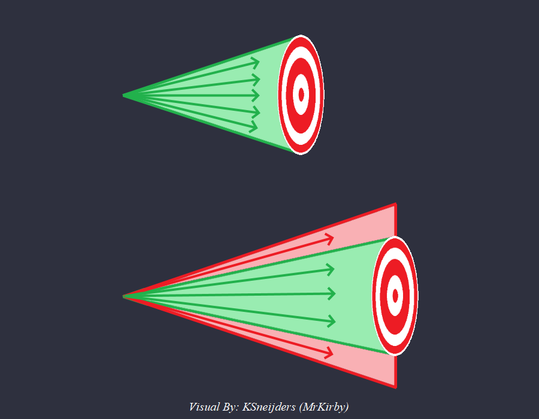

Attributes
Written by: Alian713
This page is a list of all the unit attributes that can be modified in the scenario editor and their purposes. If you know of any attributes that are not written on this page, or if the descriptions of the attributes are wrong, please let the authors of this guide know!
1. Hit Points¶
-
ID: 0
-
Purpose: This attribute refers to the health of the units.
2. Line Of Sight¶
-
ID: 1
-
Purpose: This is the distance a unit can see around itself.
3. Garrison Capacity¶
-
ID: 2
-
Purpose: This is the amount of units that can garrison inside another unit.
4. Unit Size X¶
-
ID: 3
-
Purpose: This determines the x-size of the unit's collison hitbox (width of the unit).
5. Unit Size Y¶
-
ID: 4
-
Purpose: This determines the y-size of the unit's collison hitbox (length of the unit).
6. Movement Speed¶
-
ID: 5
-
Purpose: This is the movement speed of a unit, measured in tiles per second.
7. Rotation Speed¶
-
ID: 6
-
Purpose: This is the rate at which units can rotate, measured in seconds per frame (this many seconds must pass before the object can switch to the next rotation frame). For example, for a trebuchet to start attacking a building facing the opposite direction, it has to rotate to face that way first.
8. Armor¶
-
ID: 8
-
Purpose: This is the quantity of armour a unit has on any of its
Armour Classes. If you do not know what anArmour Classis, refer to the Damage Calculation section of this guide. Note that changing the armour through this option will show it as being added to the base armour amount. (for example: 4+4)
9. Attack¶
-
ID: 9
-
Purpose: This is the quantity of attack a unit has on any of its
Attack Classes. If you do not know what anAttack Classis, refer to the Damage Calculation section of this guide. Note that changing the attack through this option will show it as being added to the base attack amount. (for example: 6+2)
10. Attack Reload Time¶
-
ID: 10
-
Purpose: This is the minimum time that must pass before a unit is able to fire another shot. For melee units it is the minimum time between two successive hits that they can do.
11. Accuracy Percent¶
-
ID: 11
-
Purpose: This determines how accurately a unit can aim at another unit.
-
Trivia1: This accuracy is the accuracy of a unit to fire at the exact centre of its target. If the shot fired is not aimed at the exact centre of the target, it may still hit the target if its not off by too much since it can still land within the hitbox of the target, just not at the exact centre.
Thus, bigger targets are actually easier to hit, which explains why buildings are an easier target to hit for trebuchets than small units.
The chances that a missed shot still manages to hit the target also depend on the distance between the target and the attacking unit. A target that is farther away is "visually" smaller, so it is easier for a missed shot to land outside the units hitbox. These images may help in explaining why:

In this image, you can see that shots that were fired in the red area in the 2nd scenario would've hit if the target had been closer like in the first scenario, but since the target is far away, they actually miss.
More technically, the visual angle of an object of the same size that is farther away is smaller, thus giving a smaller room for error for the shot in terms of the range of angles that will make the shot hit.
Trivia2: The chance of a unit getting converted by a monk is also determined by its accuracy.
Trivia3: If you modify an onager to have a big blast radius and give it a small accuracy, then attack a lot of units bunched together, the accuracy determines what percentage of units take damage from the blast of the onager! This is the reason why warwolf trebuchets get 100% accuracy because otherwise the blast wouldn't damage all of the units. Another interesting consequence of this is the delete trick with onagers and mangonels. This is where a mangonel is deleted immediately after it fires its shot and because a dead unit doesn't have an accuracy, it defaults to 100% and thus deals more damage to all the units in the blast radius.
Note: There are two other factors that play a role in determining the damage from the shot fired by the deleted mangonel.
-
The damage from a mangonel's shot is decreased over distance when moving outward from the centre of the blast (the targeted point). However, when the mangonel is deleted, this decrease over distance doesn't happen, and the projectile deals the full 100% damage to all the units in the blast radius!
-
A shot that is fired from lower elevation would normally deal only 75% of its normal damage due to the elevation damage reduction. deleting a mangonel in this case also makes the damage the full 100% as if there was no elevation difference.
-
12. Max Range¶
-
ID: 12
-
Purpose: This is the maximum range of a unit. Note that to be able to shoot at a target, it must be visible to the unit via its own line of sight or from another unit's line of sight.
13. Work Rate¶
-
ID: 13
-
Purpose: This is the work rate for any unit that can do work. Villagers, Fishing Ships, Serjeants.
14. Carry Capacity¶
-
ID: 14
-
Purpose: This is the carry capacity of Villagers.
15. Base Armor¶
-
ID: 15
-
Purpose: This is the quantity of base armour a unit has on any of its
Armour Classes. If you do not know what anArmour Classis, refer to the Damage Calculation section of this guide. Note that changing the armour through this option will show it as the base armour itself, and it will not be added to the regular amount.
16. Projectile Unit¶
-
ID: 16
-
Purpose: This is the ID of the projectile that a unit fires.
17. Icon Graphics Angle¶
-
ID: 17
-
Purpose: The functionality of this attribute is unknown as it doesn't always behave certainly. If you know what this attribute does, please let the authors of this guide know!
18. Terrain Defense Bonus¶
-
ID: 18
-
Purpose: This determines the percentage reduction in damage when fighting downhill. Note: Changing this attribute tends to crash the game, you have been warned!
19. Enable Smart Projectiles¶
-
ID: 19
-
Purpose: Setting this to 1 mimics researching ballistics for any unit.
20. Minimum Range¶
-
ID: 20
-
Purpose: The minimum distance a unit must be from an attacking unit for the attacking unit to be able to fire its projectile.
21. Amount Of 1st Resources¶
-
ID: 21
-
Purpose: This is the amount of 1st resource contained in any unit. Refer to A.G.E. to see which resource this is. If you do not know what A.G.E. is, refer to the Data Mods section of this guide.
22. Blast Width¶
-
ID: 22
-
Purpose: All enemy units inside this radius take damage from an attacking unit. This is used by elephants, Druzhina Halberdiers, and Logistica Cataphracts.
23. Search Radius¶
-
ID: 23
-
Purpose: The maximum distance at which a unit can detect and auto attack enemy units.
24. Bonus Damage Resist¶
-
ID: 24
-
Purpose: Used by Sicilians for the 50% bonus damage resistance. Set to 0.5 for all Sicilian land military units except siege
25. Icon ID¶
-
ID: 25
-
Purpose: The ID of the icon that you want a unit to show
26. Hero Status¶
-
ID: 40
-
Purpose: The hero status of a unit can control the following six properties:
| Property | Flag Value |
|---|---|
| Full Hero Status (enables everything below) | 1 |
| Cannot be converted | 2 |
| Self Regeneration (0.5 HP/s) | 4 |
| Defensive Stance by Default | 8 |
| Protected Formation by Default | 16 |
| Safe Delete Confirmation | 32 |
| Hero Glow | 64 |
| Invert All Flags (except flag 1) | 128 |
For example, if we set the hero status of a knight to 2, a monk will not be able to convert it. If we set the hero status of a militia to 4, it will regenerate HP automatically.
What if we want to enable multiple properties at once? This is achieved by adding the flag values for those properties together and setting the hero status to that value. For example, if we want to make a paladin both unconvertable and regenerate HP automatically, we can set its hero status to 2+4 = 6. This means that the hero status of a unit can take on any values in the range 1-63. If you set it to any other value, it does not have any effect on the unit
This works because notice that there is one and only one way to add different flag values together to obtain a particular value for the hero status! For example, if we have a value of 20 for the hero status of a unit, the only way to make 20 from the above flag values is to add 4 and 16. Thus, we know that the properties corresponding to the flag values 4 (self regeneration) and 16 (protected formation by default) must be enabled for that unit.
This is a consequence of the fact that every number can be represented as a unique sum of powers of two (binary numbers)
27. Frame Delay¶
-
ID: 41
-
Purpose: The amount of delay between the point when the attacking animation starts and the actual hit happening for military units. This is what makes Cavalry Archers annoying to micro.
28. Train Location¶
-
ID: 42
-
Purpose: The ID of the unit that trains any given unit. Barracks train Militia, so the train location of a Militia is the ID of the Barracks
29. Train Button¶
-
ID: 43
-
Purpose: The button used for training any given unit. For example, Militia are trained by using the first button, hence the Button Location of Militia is 1. This number ranges from 0-15
30. Blast Attack Level¶
-
ID: 44
-
Purpose: A unit deals blast damage to other units with equal or higher Blast Defense Level. For example, while mangonels (blast attack: 2) can damage your own units (blast defense of all player owned units is always 2), scorpions (blast attack: 3) cannot do the same.
Effect Blast Level damage resources, nearby allied units and tress 0 damage trees, nearby allied units 1 damage nearby allied units 2 damage targeted unit only 3
31. Blast Defense Level¶
-
ID: 45
-
Purpose: A unit feels the blast damage from other units with equal or lower Blast Attack Level. For example, while onagers (blast attack: 1) can cut trees (blast defense 1), mangonels (blast attack: 2) cannot do the same.
Effect Blast Level damage resources, nearby allied units and tress 0 damage trees, nearby allied units 1 damage nearby allied units 2 damage targeted unit only 3
32. Shown Attack¶
-
ID: 46
-
Purpose: The amount of attack that is displayed as a unit's attack (may not actually be the true attack)
33. Shown Range¶
-
ID: 47
-
Purpose: The quantity that is displayed as a unit's attack ingame (may not actually be the true attack)
34. Shown Melee Armor¶
-
ID: 48
-
Purpose: The quantity that is displayed as a unit's melee armour ingame (may not actually be the true armour)
35. Shown Pierce Armor¶
-
ID: 49
-
Purpose: The quantity that is displayed as a unit's pierce armour ingame (may not actually be the true armour)
36. Object Name ID¶
-
ID: 50
-
Purpose: The string ID to use for the name of an object. A string ID is used for refering to strings that the game recognises by default. It can be used to automatically set names by using a value that the game recognises. Trying out the value 1 on a unit and seeing what happens is left as an excersise for the reader.
37. Short Description ID¶
-
ID: 51
-
Purpose: The string ID for the Short Description of an object. A string ID is used for refering to strings that the game recognises by default. It can be used to automatically set a Short Description by using a value that the game recognises. Trying out the value 1 on a unit and seeing what happens is left as an excersise for the reader.
38. Terrain Restriction ID¶
-
ID: 53
-
Purpose: This number determines how a unit interacts with terrains and which terrains it can walk on.
| Effect | Terrain Restriction ID |
|---|---|
| All | 0 |
| Land And Shallows | 1 |
| Beach | 2 |
| Water Small Trail | 3 |
| Land | 4 |
| Nothing | 5 |
| Water No Trail | 6 |
| All Except Water | 7 |
| Land Except Farm | 8 |
| Nothing | 9 |
| Land And Beach | 10 |
| Land Except Farm | 11 |
| All Except Water Bridge Cannon | 12 |
| Water Medium Trail | 13 |
| All Except Water Bridge | 14 |
| Water Large Trail | 15 |
| Grass And Beach | 16 |
| Water And Bridge Except Beach | 17 |
| All Except Water Bridge Spear | 18 |
| Only Water And Ice | 19 |
| All Except Water2 | 20 |
| Shallow Water | 21 |
| All Dart | 22 |
| All Arrow | 23 |
| All Cannon | 24 |
| All Spear | 25 |
| All Dart2 | 26 |
| All Explosion | 27 |
| Unknown | 28 |
| Unknown2 | 29 |
| Water Smallest Trail | 30 |
39. Dead Unit ID¶
-
ID: 57
-
Purpose: This is the unit to spawn in place of any given unit when it dies. All dead corpses are actually units that just cannot be selected, meaning this value can be changed to a non dead unit. This is how the dismounted konnik spawns and how the exploding villagers mod works.
40. HotKey ID¶
-
ID: 58
-
Purpose: This number determines which hotkey is assigned to a unit.
41. Resource Costs¶
-
ID: 100
-
Purpose: Refers to the first resource cost of a unit. Refer to A.G.E. to see which resource cost that is. If you do not know what A.G.E. is, refer to the Data Mods section of this guide.
42. Train Time¶
-
ID: 101
-
Purpose: This is the amount of time it takes to create a unit.
43. Total Missiles¶
-
ID: 102
-
Purpose: This is the number of projectiles a unit fires. The Chu Ko Nu fires 3 and the Elite Chu Ko Nu fires 5.
44. Food Costs¶
-
ID: 103
-
Purpose: The food cost of a unit.
45. Wood Costs¶
-
ID: 104
-
Purpose: The wood cost of a unit.
46. Gold Costs¶
-
ID: 105
-
Purpose: The gold cost of a unit.
47. Stone Costs¶
-
ID: 106
-
Purpose: The stone cost of a unit.
48. Max Total Missiles¶
-
ID: 107
-
Purpose: The maximum number of projectiles a unit can fire when other units are garrisoned inside of it. A castle fires 5 projectiles by default but can fire more if units are garrisoned inside it. This attribute controls the maximum number of those
49. Garrison Heal Rate¶
-
ID: 108
-
Purpose: The rate measured in HP/s at which garissoned units are healed inside a given building.
50. Regeneration Rate¶
-
ID: 109
-
Purpose: The rate measured in HP/s at which units heal themselves. This value is overridden to 0.5 HP/s if the flag for Self Regeneration is set in the Hero Status of a unit.